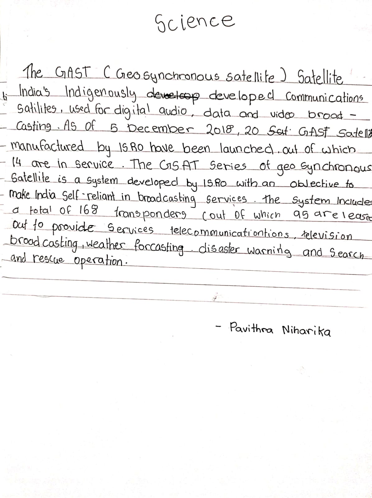
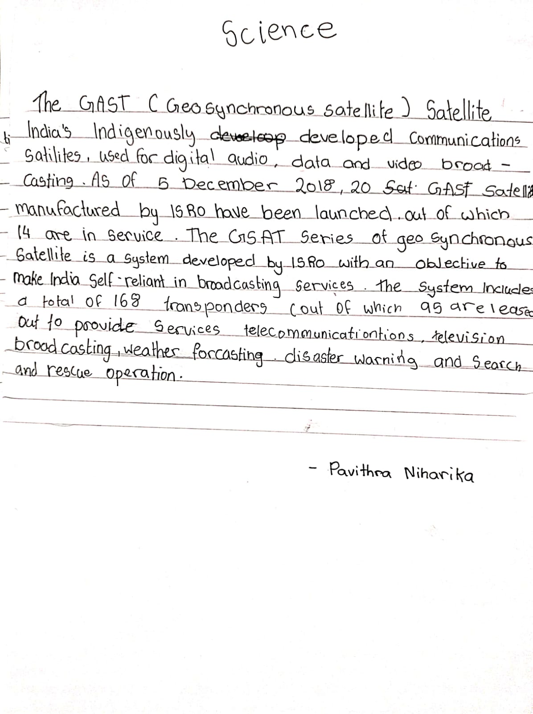

SCIENCE PAGE

Science topic description:
Welcome to SCIENCE page
| SCIENCE PAGE |  |
|---|---|
| | |
| Science topic description: |
The GSAT (Geosynchronous Satellite) satellites are India's indigenously developed communications satellites, used for digital audio, data and video broadcasting. As of 5 December 2018, 20 GSAT satellites manufactured by ISRO have been launched, out of which 14 are in service. The GSAT series of geosynchronous satellites is a system developed by ISRO with an objective to make India self-reliant in broadcasting services. The system includes a total of 168 transponders (out of which 95 are leased out to provide services to broadcasters) providing services to telecommunications, television broadcasting, weather forecasting, disaster warning and search and rescue operations. |